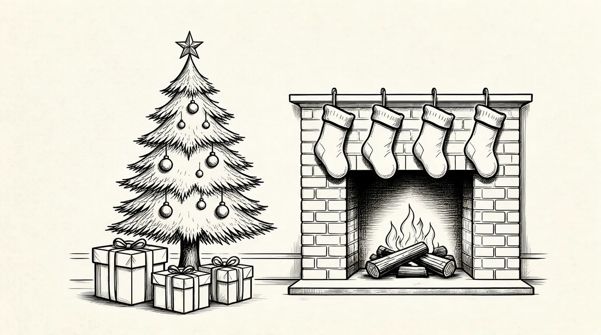

第47章 不眠之夜

用“点石成金”来形容巴菲特对所罗门公司的收购并不为过，至少在外人眼中是这样的。这位来自奥马哈小镇的先知以令人惊叹的手笔完成了这次收购，但是你会惊讶地发现，这位世界首富和你身边的人并没有太多的区别，他的“豪宅”只是一栋价值31500美元的房子，而他开的车还是8年前购买的那部凯迪拉克。在巴菲特身上，唯一与那些富豪少有的相同点恐怕就是他对华尔街银行的投资了。
事实上，巴菲特起先并不赞同华尔街的那些做法，而现在他却成了这里的一部分。在写给伯克希尔股东们的信中，他抨击了华尔街利用垃圾债券来完成收购的做法，其中也包括所罗门公司。他在信中这样写道：“这些交易是在那些没有头脑的人之间进行的，他们从不在乎别人的想法！”1“我从来不和那些股票经纪人或者分析师说话！”他还写道：“考虑问题的时候你要有自己独立的想法！华尔街是世界上唯一一处能够看到开着劳斯莱斯的富人向那些挤地铁的人们讨教成功秘籍的地方！”2而在之后发行的《华盛顿邮报》中，人们又能看到巴菲特类似的言论，他用“赌场”来形容当今的这个社会。就是这种赌博的心态让那些企业掠夺者们变得富有起来，但是为什么政府不对这些人全额征税？3他们要是纳税，税额肯定不会少！从1982年到1987年的5年间，道琼斯工业平均指数从777点激增到2722点，所以巴菲特这样告诫商学院的学生们：“想要赚钱吗？那么到华尔街去吧！”不过说这话的时候，巴菲特已经身在华尔街了。
华尔街究竟是什么样子呢？对来自美国中西部的这位平民来说它有着巨大的诱惑力，使人很难轻易离开。当有记者问巴菲特，为什么在所罗门公司这般混乱的时候，他却选择进入，而且还持有相当一大笔股份时，巴菲特没有任何迟疑地告诉来访者：“因为我信任一个人，约翰·古特弗罗因德，这位所罗门公司前首席执行官非常出色，无论在哪个方面都是如此，这是一个值得尊敬的人。”4
的确，巴菲特对于身边人的感情总是很深，但人们却发现他对古特弗罗因德的感情不是用言语可以表达的，甚至从一开始就是这样。曾经，巴菲特因为不想看到客户间的利益纷争选择辞职，但是他并没有向古特弗罗因德隐瞒自己拥有部分投资银行股份的事情，不过那时巴菲特的公司已经被客户间的利益纷争弄得苦不堪言。但是，是什么让巴菲特——在最糟糕的时候——成了这家公司董事会的成员？5在那段经济不景气的日子，巴菲特赚钱的欲望似乎战胜了个人的希望、追求和原则。正如他一生所经历的那样，只要贪婪欲望主导了自己，厄运似乎也就悄然而至。
1987年，就在巴菲特投资所罗门公司那一年，股市接近了崩溃的边缘。就在当年3月他写给股东们的信中他提到了对投资经理的看法：“这些人都是伪善家，他们能让纷乱的场景变得异常平静！”不过巴菲特并没有解除与任何投资经理的合约，人们看到的只是在之后的几个月里，巴菲特开始抛售股票。他知道随着股票市场不断上涨，其中必定有某种推动它的因素，那就是标准普尔500指数期货这一新发明。包括所罗门公司在内的绝大多数银行都开始接受这一衍生工具合约。它是一种全新的事物，类似于赌博性质，赌的就是标准普尔500指数在未来某个时间内是否上涨。6举个例子，在洛克伍德巧克力（RockwoodChocolate）的交易中，这一衍生工具合约的意义和价值取决于未来某个时间点上原材料可可豆的市场价格：如果未来可可豆的市场价格低于期货合约所确定的基础价格的话，那么期货合约的买方就算是买到了保险，也就意味着他赚了；反之，如果可可豆的市场价格上扬，那么期货的卖方就会赢利，这份合约也就意味着这个人能以低于目前，而不是未来价格的价钱买到这些原材料。
让我们再看看巴菲特与豪伊就“减肥”问题以农场租金下赌的例子。巴菲特当时并不希望儿子真的能减肥，因为那样的话会降低租金。不过是否减肥完全取决于豪伊的态度，所以沃伦想买个第三者保险，他也许会对妻子苏珊说：“我们打个赌吧，我给你100美元，看看豪伊能不能减肥，如果豪伊瘦了20磅，并在之后6个月没有反弹的话，你要给我2000美元，补偿我损失的2000美元的租金，否则的话，我那100美元就是你的了！你不用给我一分钱！”这次打赌的输赢取决于豪伊的减肥结果，而巴菲特能不能从中获利则取决于当事人能否减肥并保证减轻后的体重不反弹。
究竟什么是衍生工具合约？让我们看看另外一个例子，假设巴菲特和女友阿斯特丽德·门克斯打赌，看巴菲特能不能在一年内不再吃薯片。如果巴菲特没有做到，那么根据赌约，他就要给女友阿斯特丽德1000美元，这就算不上是衍生工具合约，因为它不牵扯第三方的利益，巴菲特是不是吃薯片与第三方没有任何关系，完全取决于他个人的意愿。
但是如果巴菲特换一个打赌的方式，在双方都同意的前提下，让巴菲特的妹妹伯蒂也介入其中：最开始阿斯特丽德先支付给伯蒂100美元作为“保险费”，如果阿斯特丽德输了的话，这100美元就是伯蒂的了，否则伯蒂要给阿斯特丽德1000美元，衍生工具合约就这样产生了。合约成立的条件是巴菲特是否能按照赌约一年内坚持不吃薯片，这一点完全不受阿斯特丽德或是伯蒂的控制。如果巴菲特不能遵守赌约吃了薯片，那么阿斯特丽德就要给伯蒂100美元，否则伯蒂就要给阿斯特丽德1000美元。所谓的衍生，从这个意义上来讲就是一种保险方式，在我们的这个假设里，就是阿斯特丽德寻找的一种保险方式，而对于伯蒂则是一场赌博！7
很多人在选择进行衍生工具合约交易时所信赖的并不是基于对对方的信任，也许合同双方根本没有见过面，而是选择了一个冷冰冰的数字——标准普尔股指期货。1987年前后股票市场是这么规定的，投资经理纷纷选择股指期货进行投资。他们认为这种投资存在某种可以为客户提供“衍生工具合约中的保险份额”的东西，如果股市下跌到某个水平线下，那么股指期货就能为客户避免损失。那些认为股市一直将处于牛市状态的投资者其实是在赌博，他们不断地与客户签订衍生工具合约，期待股票的回报率能给自己带来收益。
有关衍生工具合约中存在的风险，巴菲特看得很清楚，这也是为什么他给美国国会写信的原因。早在1982年，巴菲特就呼吁联邦政府介入此事，他在信中陈述了有关衍生工具合约中存在的风险，并表示希望联邦政府能够出面给出相关的市场监管措施，但是市场还是那样，并没有出现任何改变。8从那开始，股指期货中存在的问题慢慢被人们所忽视，如果股市下跌的话，投资经理会在第一时间得到相应的账单，接下来他们要做的就是抛售手里的股票兑换成现金以支付客户的索赔费用。而作为期货的买方，他们通常把期货当作自己手里项目交易的担保，在市场下跌的情况下，他们手里所持有的期货将会自动卖出，这样也就在无形中促进了大量的交易。
不过这种局面并没有维持多久的时间，一切在1987年秋天画上了句点。从刚刚进入秋天开始，股市就出现了一些反常的现象，股指增长时断时续。到了10月19日这一天，问题全面爆发，道琼斯工业指数狂跌508点，创下了道琼斯指数日跌幅之最，这一天也被称作“黑色星期五”。9所有人都希望能够尽快逃出这个牢笼，股市差点儿就重蹈1929年股灾的覆辙，交易所几近选择停盘！
巴菲特集团的股东大会刚好在股灾的第三天进行，这次会议的地点选在了位于弗吉尼亚州的威廉斯堡。整个会场由凯瑟琳·格雷厄姆负责统筹布置。她利用威廉斯堡烘托出了一种全新的氛围。前来参加股东大会的人来自世界各地，有的甚至来自并不富裕的地区。他们早晨醒来时发现自己的早餐“足够一千个人享用”，早餐种类非常丰富——鸡肉、牛肉、汉堡、鹅肝、鸡蛋应有尽有，这和他们之前的生活形成了鲜明的对比。某一天晚上，凯瑟琳租下了卡特的格鲁夫种植园作为晚宴地点。格鲁夫种植园位于詹姆斯河沿岸，它的历史可以追溯到18世纪。此外，凯瑟琳还租用了一个剧场来播放里克·格林的电影。尽管巴菲特的股东大会每年都会举行，但每一年的水准都有一个很大的提高，与会者纷纷为大会的规模感到震惊，当然令他们感到惊讶的还有每次股东大会的巨额支出。“有幸成为凯瑟琳的客人简直太棒了！”股东之一的查克·里克肖塞尔说道，他的这种说法也得到了周围人的赞同。在股东大会即将结束的那个晚上，凯瑟琳请来了一些音乐家在德威特·华莱士博物馆演奏助兴，穿着考究的音乐家们现场演奏了海顿的作品，演奏结束后，现场的观众报以阵阵热烈的掌声。10
股东大会原定的议题是“巴菲特集团是不是将随着股市而终结”，在股灾发生后，人们不断听到股市崩盘的消息，不断被累加的损失轰炸着，但是巴菲特、蒂施、戈特斯曼、鲁安、芒格等人却在关注股票价格，不断打着电话。股灾之后，他们没有选择抛售股票，而是在不断买进！对，他们在不断买进！11
当股市崩盘的幸存者刚刚摆脱灾难，巴菲特的姐姐多丽丝却陷入了麻烦。当时，多丽丝正居住在弗吉尼亚州的弗雷德里克斯堡，那还是巴菲特的父亲老霍华德当选为国会议员后，他们全家搬到那儿去的，从此多丽丝就深深地爱上了那里。眼下，多丽丝和很多弗吉尼亚州的人一样，都在兜售所谓的“裸卖看空期权”，一种由弗吉尼亚州福尔斯彻奇市的一个经纪人兜售的。这种期权其实就是一种承诺，承诺在市场下跌时为他人的损失买单，之所以说是“裸卖”，是因为它们没有附属任何抵押品，因此出现损失时得不到保护12。经纪人对多丽丝说这会给她带来稳定的收入，这正是她所需要的，但这位经纪人丝毫没有如实地描述其中的风险，尤其是用了“裸卖看空期权”这个玄乎的词语，更让人看不清其中的风险。多丽丝在投资方面经验不足，但非常聪明，而且对任何事情都充满了怀疑态度，这一点和弟弟巴菲特很相似。在与弟弟的聊天中，多丽丝并没有提及有关自己投资的话题，因为她知道弟弟是肯定不会同意的。一直以来，巴菲特就以“保守”著称，通常情况下他只向人们推荐极其安全和低回报的投资，国库券或者市政债券就是巴菲特给出的最好选择，特别是面对多丽丝这样的离异女士时更是如此。当然，巴菲特自己不会选择这些低回报的债券来投资。出于对弟弟的信任，从很早的时候，多丽丝就成了巴菲特的第一批客户，特别是在投资伯克希尔–哈撒韦时，多丽丝更是给予了弟弟完全的信任。但可能是多年前的投资阴影依然在多丽丝脑海里盘旋（巴菲特12岁时与姐姐合伙购买了3股“城市服务公司的优先股”，但数月后股市大跌，两人也因此被套牢），所以在本应该向巴菲特征求投资意见的时候，多丽丝没有张口。
这样，多丽丝完全按照自己的想法行事，最终的结果就是她手里持有的所有伯克希尔的股份不复存在，经纪人更是以破产对其加以威胁。绝望之中的多丽丝给经纪人写出了几个朋友的名字，希望朋友们能帮她渡过难关，为此，多丽丝也深感自责。
在多丽丝的心中，巴菲特一直扮演着保护者的角色，她甚至给弟弟做了一个微缩型的神龛，里面放着弟弟喜欢的高尔夫俱乐部模型、百事可乐罐等等。不过在出现问题时，多丽丝并没有直接寻求弟弟的帮助，而是找苏珊作为中间人穿针引线，因为她觉得所有的家庭都是这样来解决问题的。其实多丽丝的前半生并不幸福，到1987年，她已经经历了三次不幸的婚姻：她感到自己在第一次结婚的时候就失去了安全感，第二次婚姻让她觉得深陷于婚姻的牢笼之中但又无力挣脱，而与一位丹佛的大学教授的第三次婚姻对于多丽丝来说本身就是一个错误。现在的多丽丝已经经历了很多，面对问题的时候她不会选择沉默，而是会尽力争取自己的权利，但是这一次，她却不知道该怎么做了。
“你不用担心！”苏珊安慰多丽丝说，“沃伦说会永远保护你！”
在多丽丝把自己投资上的不幸遭遇告诉苏珊后，她在某个周六的早晨接到了弟弟的电话。在电话里，巴菲特明确表达了自己的态度，不会向姐姐提供帮助！巴菲特告诉多丽丝说，如果帮她还钱的话，肯定是帮了那些有钱人。在巴菲特看来，这些人都是投机商人，所以他肯定不会向投机商人提供任何帮助！当多丽丝认识到这一点后，她出了一身冷汗，双腿也开始发抖，她觉得弟弟的决定是对她的一种蔑视，而在巴菲特看来，做出这样的决定绝对是非常理智的！
如果我愿意的话，我可以拿出几百万还给她的债权人，但是你知道的，让他们做梦去吧！我是说那个把这些破烂儿卖给多丽丝的女人，是她让买了她产品的人都破了产！
既然弟弟不能帮忙，多丽丝不得不把期望寄托在苏珊身上，苏珊本来就很有钱，再加上巴菲特还给了她很多，解决问题肯定够了，但是正如苏珊没有给外甥比利·罗杰斯支付购房首付一样，在金钱问题上，苏珊没有出手！
《华盛顿邮报》对此进行了报道，文章里写道“一位极其成功的投资者”的姐姐做了一件非常愚蠢的事！这对于巴菲特的声誉无疑是一个巨大的打击，多丽丝也因此度过了一段非常难熬的时间。巴菲特家族还没有完全从7个月前比利·罗杰斯注射毒品致死的阴影中走出来，现在又出现了多丽丝这样的麻烦事，而巴菲特家族的这一内部矛盾再一次成为人们关注的焦点，这个外表看似和谐的家庭实则隐藏着不少问题。在这件事情的处理上，巴菲特也觉得自己太过理智了，他也害怕多丽丝会爆发，这和凯瑟琳·格雷厄姆很相似，如果格雷厄姆感到自己受到了威胁，她肯定也会爆发。巴菲特非常了解自己的姐姐，他不希望任何极端的事情发生，所以巴菲特退缩了，他不再给多丽丝打电话，也告诉家里其他的人不要再骚扰她。多丽丝吓坏了，她觉得自己被家人抛弃了，陷入这种深深的恐惧之中，再加上心头的创伤，多丽丝开始对她的母亲利拉发难，恐吓并向其索要钱财，并依靠贷款来避免房屋被抵押的可能。13不过具有讽刺意味的是，美联储宣布下调利率，各大公司也纷纷以回购自家股票的方式救市，股票市场很快从灾难的阴影中恢复了过来，整个股灾之后只剩下了像多丽丝这样的牺牲品。经历了一段时间的痛苦，多丽丝又和一位名叫阿尔·布赖恩特的人结了婚，一个帮助她摆脱困境的律师。
表面上巴菲特对姐姐很无情，但是私底下他正在安排从父亲老霍华德的信托银行每月预支给她1万美元，这也是霍华德的遗嘱里写明了的。“这笔钱比我这一辈子花的钱都多！”多丽丝兴奋地说道，这样她和巴菲特之间紧张的关系开始有所缓和，两个人也开始说话了，多丽丝对巴菲特也怀有深深的感激之情——直到某一天她发现这些都是自己的钱，只不过是提前预支而已。而这时，多丽丝的信托股份正在慢慢增长，她手里持有超过2000股伯克希尔–哈撒韦的股票，1964年时这些股票只值3万美元，而到了1987年股灾结束后，2000股伯克希尔的股票累计达到了1000万美元！不过根据霍华德的遗嘱，这笔信托款要在利拉去世后才能有效，届时多丽丝和妹妹伯蒂可以分4次拿到这笔钱。当多丽丝把这笔钱当作未来的救命稻草时，巴菲特又进一步伸出了橄榄枝，成立了舍伍德基金会，该基金会每年支付50万美元“仁慈”的礼物，多丽丝、巴菲特的三个子女和女友阿斯特丽德每人可以得到10万美元，而且可以随意支配。这就像巴菲特为他们5个人设立了700万美元的信托财产一样。因此，多丽丝的股份很像是巴菲特付给她钱，只不过是换了种形式。
当然，多丽丝不能用这笔钱偿还债务或者房贷，巴菲特不会把钱直接放在姐姐的手上，而是要随时监控这笔专款的流向。这场风暴平息之后，多丽丝又恢复了信心。她很感激巴菲特能用自己的方式把自己从困窘中解救出来。她清醒地认识到，如果没有巴菲特，她什么也不会得到。在偿还了所有的债务后，多丽丝和巴菲特的关系也渐渐恢复正常，那个神龛又安放在她家的墙上了。
股灾之后，另一个需要巴菲特帮助的就是所罗门公司。在伯克希尔–哈撒韦注资3个月后，巴菲特和芒格一起第一次参加所罗门公司董事会议。当天的主题是交易量锐减与所罗门公司合并案，以及在“黑色星期五”那天公司产生的7500万美元损失。14所罗门公司不得不面对“黑色星期五”后狼藉一片的现实。而就在股灾前一天，古特弗罗因德那张白净的脸上毫无表情，他刚刚裁掉了800名员工，其中不乏一些有经验的老员工。他还关闭了赢利空间较小的业务，例如商业票据交易（债券业务的死水区），但由于太仓促，结果伤害了同一些重要客户的关系，几乎到了无法弥补的地步。15再加上股灾的影响，所罗门公司的股东们眼前似乎出现了一个永远也填不满的无底洞，就这样，所罗门的股票开始接近悬崖的边缘。
就在股东们为损失而痛苦时，所罗门公司薪酬委员会——巴菲特在该委员会主席鲍勃·泽勒的要求下也成为其成员之一——开始商讨有关降低股票价格的事宜，希望能通过这种方法让公司员工在他们可以接受的范围内行使自己的股票期权。
公司员工的股票期权是指他们可以在未来某个时间以某一特定价格购买公司股票的权利。以巴菲特名下的喜诗糖果公司为例，行使股票期权就好比是巴菲特预先付给员工一些股票，使他们今后可以以某个特定的价格来购买公司生产的糖果。如果糖果的价格持续每年走高，那么股票的价值也会随着时间而增长。
不过喜诗糖果公司在1987年“股灾年”也是流年不利，公司正面临亏损，员工们很可能要面临降薪的危险。薪酬委员会提议通过让员工们以低价购买糖果的方式来弥补员工工资的损失。但是巴菲特并不同意这个议案，他认为喜诗糖果应属于各位股东而非员工。16巴菲特主张公司赢利减少多少，员工持有的糖果份额就相应地减少多少。17但薪酬委员会的其他成员并不这么看，他们认为数月前古特弗罗因德在宣布公司的糖果货存时，就已经承诺员工们这批糖果所能带来的收益。而当糖果大幅促销时，公司也有责任弥补这个差价。也许他们试图阻止传统的华尔街分红日人群蜂拥的场面——拿了钱就跑，但这种举动往往发生在人们对于结果并不满意的时候。
巴菲特认为，从道德上来讲，这是不对的，既然股东们得不到分红，为什么员工能得到糖果？不过投票的结果还是说明了一切：人们以2∶1的投票结果否定了巴菲特的提议。他愤怒了！18但这又能代表什么呢？巴菲特在所罗门公司的董事一职几乎是有名无实的，人们很少去征求他的想法，更不要说去采纳他的意见了！所以即使时下正值所罗门公司的股票复兴期，巴菲特也从投票结果中立即感觉到自己在所罗门公司投资的经济利益“比之前要少了很多”！
我可以反抗得更强烈、更有声势，如果那样的话，我的感觉会更好一些，但历史的进程始终是无法改变的！除非你是一个争强好胜的人，否则那样的做法毫无意义！
我不喜欢战争，但如果需要我也不会退缩，只是从个人的角度出发，我对战争毫无兴趣！组建董事会的时候，我和查理都没有反对，我们都投了赞成票。我们没有抵制，因为抵制就意味着要去攻击他人。毕竟所罗门公司还存在其他一些问题。公司里总是是非不断，我都怀疑这是不是疯了，但是人们不想看到我发表意见。那么留给我的问题是，我要发表意见吗？我不会单纯地为了挑起战争而挑起战争。
古特弗罗因德最初被巴菲特吸引是因为后者的性格，冷静、善于思考，同时热衷于自己的事业。每天早上7点，巴菲特都会准时出现在办公室，点上一支牙买加雪茄，然后游走在那些穿西服打领带的交易员当中，告诉他们“你每天早上都要打起十二万分的精神”。19事实上，对于公司员工们来说，巴菲特并不是一个积极、爱表现的股东。20他看上去对企业经营的细节似乎知之甚少，但是完全适应一项产业并不像运作传统的实体企业或者像运行一条流水线那样轻松，这对巴菲特来说并不那么容易。21最开始，巴菲特在所罗门进行投资只是因为古特弗罗因德的原因，而现在巴菲特并不喜欢所罗门公司的运营方式。他完全可以做出新的选择，那就是卖掉手中持有的所罗门股票，并辞掉公司董事一职。22这种可能到了华尔街就演变成了巴菲特与古特弗罗因德激烈的冲突，要么巴菲特卖掉所罗门公司的股份，要么他把古特弗罗因德炒了鱿鱼，并引入一位新人来接管公司。23但事实并非如此。一旦巴菲特卖掉股份并撤出董事会，直接影响到的就是所罗门公司的股价，那么作为公司主要投资者的巴菲特会面临惨重的经济损失，同时他也会显得变化无常、报复心理极重而且非常不可靠。要知道，现在“巴菲特”这个姓氏已经成为伯克希尔–哈撒韦价值的一部分，这种损失巴菲特承担不起，伯克希尔也承担不起。而另一方面，巴菲特之所以投资所罗门公司的原因就是古特弗罗因德，如果巴菲特伸出臂膀拥抱一个人，那么他就很难和这个人分开。所以当假期来临的时候，巴菲特和古特弗罗因德两人必须要解决出现的问题。
同时，1987年的股灾造成的影响并不是轻轻松松就能消除的。就在新年即将到来前两周，巴菲特集团的成员们接到了凯瑟琳·格雷厄姆发过来的一个通知，有些人脸上露出了惊讶的表情，凯瑟琳给他们每个人都寄了一张账单，这也宣告着“他们都不再是她的客户了”。巴菲特集团的人们要为威廉斯堡奢华的股东大会付账，而总额是“有点儿令人吃惊”的。“很遗憾我这么晚才通知大家，我的确很遗憾，但我依然希望各位能有一个愉快的圣诞节，我依然是你们的朋友！”24
巴菲特确实过了一个愉快的圣诞节，但原因并不是因为凯瑟琳的祝愿，而是因为可口可乐公司，后者带给巴菲特的快乐足以安抚他从所罗门公司受到的种种伤害。早些时候，巴菲特参加了在白宫举行的一场宴会，席间，巴菲特和老朋友基奥碰面了，后者当时是可口可乐公司的总裁兼首席运营官。基奥让巴菲特放弃百事可乐，并向其推销可口可乐公司新近推出的樱桃可乐。巴菲特尝了一下，感觉不错，从此就喜欢上了可口可乐。巴菲特的这种做法令他的家人和朋友目瞪口呆，他们都知道一直以来巴菲特都是百事可乐的忠实粉丝，而现在他却发生了如此巨大的改变。不过，基奥要说服巴菲特把投资重点从百事可乐转移到可口可乐却并不容易。巴菲特曾经认为可口可乐公司的股票太贵了，但是现在可口可乐却陷入了困境，主要竞争对手百事可乐挑起了灌装商之间的矛盾，可口可乐公司的股价降到了每股38美元！更是有人传闻，露华浓老板罗恩·佩雷尔曼将对可口可乐进行收购！所以可口可乐方面一直在回购自己的股票以稳定股价。巴菲特知道这个收购价格并不划算，但可口可乐毕竟是一个大品牌，这样的收购巴菲特之前也做过，就是收购美国运通公司，因此收购可口可乐算是一笔划得来的买卖。
但在巴菲特看来，可口可乐并不是“烟蒂”型公司，而且它的现金正大量地流出，只将少部分的钱用于公司运作。巴菲特提倡的现金流开始发挥作用了，他知道现金能创造多少价值，心中也在盘算着这笔交易。过去几年里，巴菲特始终没有放弃对可口可乐公司的研究，他知道可口可乐公司在过去挣了多少钱，也可以判断出在未来的几年里可口可乐公司将有多大的发展空间。25再考虑到可口可乐公司年复一年的资金流动，巴菲特能给出一个最终的价值。
你很难精确预测一家公司在今后几年的发展，而巴菲特在他的预测中使用了安全边际理论。在推算的整个过程中，他既没有使用复杂的模型和公式，也没有用电脑或者电子表格来计算，他的判断只是建立在一些简单的推理基础上。如果最终结果不能使他感觉像发现远古人一样兴奋的话，那么在他看来就没有投资的必要。
最后的结果，让巴菲特不得不把可口可乐这个品牌和自己的伯克希尔进行比较。巴菲特依然沿用了“林中鸟”的故事，在他看来，可口可乐公司是林子里的鸟，随时都可能飞走，而伯克希尔的现金则是巴菲特手里的那只鸟。如果把钱投资在政府债券上，肯定不会有风险，但是投资于可口可乐公司能让巴菲特在相同的时间内赚上一笔。经过一番比较，巴菲特觉得在某种程度上，可口可乐是个完美的抉择，他甚至想不出哪笔投资能比投资可口可乐公司有更丰厚的回报，这就是巴菲特注资可口可乐的开始。
在1988年的伯克希尔–哈撒韦股东大会上，可口可乐公司的产品首次亮相。当公司股东们开始学着巴菲特的样子暴饮可乐时，他们并不知道自己通过伯克希尔也都拥有了可口可乐公司的股份。当年的股东大会在乔斯林艺术博物馆举行，有近1000人参加。同样是在这一年，伯克希尔–哈撒韦在纽约股票交易所挂牌上市，并成为美国规模最大的企业集团之一。由于当年参加股东大会的人数过多，有些股东根本找不到停车位，会议不得不推迟进行。这种场面让巴菲特灵机一动，他租用了两辆校车并说服几百位股东在会议结束之后跟随他去内布拉斯加州家具城。一方面他要把自己仰慕已久的B夫人介绍给大家认识，在过去5年的时间里，巴菲特一直提到这个名字，但人们始终没有见过B夫人。来到家具城后，股东们被B夫人在地毯部驾驶的像微型坦克一样的电动车深深吸引，也被B夫人的定价震撼了，这些地毯的售价是57000美元。26
截至1988年年底，巴菲特已经斥资6亿美元购买了可口可乐公司超过1400万的股份，但公司的股东们并不知情。27因为巴菲特的每个举动都会对股市产生不小的影响，因此，巴菲特得到证券交易委员会一项特别恩准——他可以一年内不披露自己的某项交易。这样，巴菲特手中的可口可乐公司股份达到了一个空前的额度，而且可口可乐公司也回购了很多。在竞争过程中，巴菲特和可口可乐公司并不是哄抬股价，而是正如沃尔特·施洛斯所描述的那样：“可口可乐公司购买一半，而巴菲特购买剩下的那一部分。”28很快，伯克希尔对可口可乐公司的股票持有率达到6%——市值为12亿美元！29终于在1989年3月，巴菲特的把戏被揭穿了，人们纷纷到纽约股票交易所购买可口可乐公司的股票，最终，纽约股票交易所方面不得不给可口可乐公司挂上了当日涨停的牌子。
时任可口可乐公司首席执行官的是美籍古巴人罗伯托·戈伊苏埃塔，他为可口可乐的价值被巴菲特这一著名投资人认可而感到欣喜。戈伊苏埃塔邀请巴菲特进入公司的董事会，巴菲特答应了下来，并且很快就完全融入了可口可乐的一切日常工作中。这期间，他认识了一些可口可乐董事会的朋友，其中就包括艾伦公司的总裁赫伯特·艾伦。艾伦是个说话直率而且个性耿直的人，两人很快就成了好朋友。艾伦邀请巴菲特参加他于7月在太阳谷举行的名人聚会，一个汇集了投资者、各大公司首席执行官、好莱坞明星的名人聚会。
参加太阳谷的聚会意味着巴菲特每年的行程里要再加上一件事，但他知道太阳谷聚会对自己来说非常重要，所以他也愿意参加。他要用不断提升身份的方法来保证作为一个首席执行官俱乐部成员的优势，而且巴菲特有足够炫耀的资本，他用700万美元买回了一架挑战者喷气飞机，之前的那架“猎鹰”则退出了历史舞台。巴菲特在写给股东的信中也提到了这个问题，他在信里引用了一段奥古斯丁在祈祷时候所说的话：“神啊，救救我吧，请洗刷我的心灵，但能晚一些吗？我不希望是现在！”巴菲特更是表示自己希望成为空中飞人，“就算死，也要死在机舱里”。
在赶往机场的路上，巴菲特去医院探望了苏珊的姐姐多蒂。年老体弱加上长期嗜酒，多蒂的身体状况并不好，而且她刚刚被诊断出患上了格林–巴利综合征。这是一种病因不详的自身免疫疾病，如果突发很可能导致神经系统的瘫痪。当时多蒂正处于昏迷之中，糟糕的身体状况就连她的主治医生都建议放弃药物治疗而采取自然疗法。
担心姐姐的苏珊并没有接受这个建议，多蒂经历了漫长的治疗过程，苏珊则从夏天到秋天一直留在奥马哈照顾她。她在多蒂家旁边买了一套公寓，从那里到多蒂的住所只需要穿过一个大厅。这段时间，苏珊还帮助大儿子豪伊去竞选道格拉斯县的县长。这个岗位主要负责掌管奥马哈及其周边地区，豪伊是以共和党拥护者的身份参加选举的，不过显然共和党人身份在竞选中更为有利，但拥护者的身份倒也没什么妨碍。面对儿子的竞选行为，巴菲特一直以来的观点就是不对其进行经济支持，他认为富家子弟不一定要有大笔的财产。所以豪伊的竞选经费只能自己掏腰包，而在母亲苏珊的帮助下，豪伊的竞选难度降低了很多，每次出现在公众面前，苏珊都尽可能地展现自己迷人的一面，帮助儿子争取更多的选票。30最终豪伊如愿以偿当选，巴菲特也显得非常高兴。对于儿子经营的农场事业，巴菲特从来都没有与之产生过共鸣，但是豪伊的这次参政却让巴菲特对其另眼相看。他看到儿子正在一点点变得成熟，也知道了儿子心中的抱负，所以他开始劝说儿子竞选众议院议员，这也是巴菲特的父亲老霍华德曾经达到的政坛高度。
那段时间，除了小儿子彼得住在旧金山外，大儿子豪伊和女儿苏茜都在巴菲特的身边，和彼得相比，豪伊和苏茜更希望得到父亲的关心和爱。苏茜回到奥马哈是因为第二个孩子迈克尔的出生，在没有与丈夫艾伦商量的前提下，苏茜告诉巴菲特，艾伦希望能管理巴菲特基金会的事务。之前基金会在其主管，也是巴菲特家族好友雪莉·史密斯的领导下，经历了一场战略性的方向调整，基金会急需有人出面统筹管理。而在巴菲特眼中，这是一个绝佳的机会，既能把女儿留在身边，也能让苏珊离自己更近一些。
让女儿留在身边和让苏珊留在身边，显然对于巴菲特来说是不一样的。和母亲一样，苏茜非常会照顾人，不过她的态度和苏珊相比还是有些强硬。但是现在，至少有两位女性同时在照顾巴菲特了，这一点让他很满意。在他看来，被更多的女人照顾永远都是顺理成章的。“我认为女人懂男人比男人懂女人要多些。要我戒掉被女性照顾的习惯？下辈子吧！”巴菲特总是希望被照顾，否则他的生活将会混乱得一塌糊涂，那样他将无法工作，也不能解决任何问题。对他来说，在身边照顾他的人能够各司其职才是他最大的乐趣，就这样，苏茜和阿斯特丽德开始在巴菲特生命中扮演着不同的角色。
如何取悦身边的女性朋友？巴菲特想出了一个非常不错的方案，那就是利用波仙珠宝店（Borsheim’s）。波仙珠宝店位于奥马哈市，是一家专营中高档珠宝的折扣店，它的老板是路易斯·弗里德曼，也就是B夫人的姐夫。巴菲特深知女人对珠宝的热衷远远超过服装，无论衣服能展现出什么样的价值。在众人中，最具有这种购物癖好的就是苏珊了，巴菲特曾送给她一套精美的珠宝收藏品，被苏珊细心地珍藏了起来。苏茜、凯瑟琳·格雷厄姆以及巴菲特的姐姐和妹妹也都很喜欢珠宝，唯一对珠宝没有感觉的就是阿斯特丽德了，她对一切价格昂贵的东西都敬而远之，不过似乎只有在巴菲特送珠宝给她时，她才不会拒绝。
所以从1989年开始，巴菲特不会再为给身边的女性朋友购买礼物而头疼了，他制定了一个方案，礼物包括耳环、珍珠、手表三件，每个人每年都会得到不同主题的礼物，但他自己却没有收到任何礼物，这与带给他无限风光的可口可乐巨头的身份不太相符。更糟的是，巴菲特再次遭受了冲击，《说谎者的扑克牌》的书成了他的噩梦，这本书的作者就是所罗门公司的经纪人迈克尔·刘易斯。这本书不但描写了所罗门公司的企业文化——傲慢、富有创新精神，而且精力充沛，还详细描写了1986到1987年间公司的衰落史。此书一经问世，就登上了销售榜的头名位置。该书对所罗门公司内部的一些古怪行为的描述给读者带来了极大震撼，使所罗门公司被视为一个聚集着华尔街最好斗、最粗俗之人的类似于动物园的地方，这使所罗门公司的声誉从此很难恢复。31而20世纪80年代末期盛行的公司兼并热潮也渐渐冷却下来，巴菲特熟悉的交易领域变得冷冷清清，几乎没有公司可以让他投资或者收购，不得已，巴菲特降低了选择标准，于是霍克希尔德–科恩这样的百货公司才进入了巴菲特的视线。
事实上，巴菲特的投资之路并没有因此被阻断，不乏首席执行官出于对公司命运和自己的未来感到担心，而给巴菲特开出了非常诱人的条件吸引他们加盟。巴菲特为伯克希尔–哈撒韦买了3只最合算的“可转换优先股”股票，条件和所罗门公司开出的类似，巴菲特将获得平均9%的利息，他也可以撤回资金，或在公司经营良好的情况下将优先股转化为普通股，但巴菲特注资或关注的这些公司的情况相差很大。冠军公司，一家经营业绩很差的纸业公司，也被兼并者盯上了。吉列公司，和巴菲特名下的喜诗糖果公司一样，对它的品牌有很强的保护，令公司在竞争中不致受到伤害，曾经一度使投机者对其望而却步。32而总部位于美国匹兹堡空军基地的美国航空公司，在不受政府管制的新行业，还是一个竞争力很弱的地方上的竞争者，同样被卷入收购中。
就像所罗门优先股一样，这些特殊的交易条款让巴菲特成了批评家眼中各大公司首席执行官们的保护神。不容争辩的是，伯克希尔–哈撒韦的股东们得到了最大限度的利益回报，同时巴菲特又能保证他们远离风险，所以现在的巴菲特看上去更像是一个交易所的内部人员，想依靠特殊交易获得成功。
在这个充满收购交易和企业掠夺者的年代，这种贪婪是微不足道的。巴菲特本可以轻而易举地变成一个收购霸主，但是他并没有这样做，他保持了对人的一贯友善，并牢牢地坚守着自己对于收购的理解。他敬爱的导师本杰明·格雷厄姆一向认为，一个人在股市中进行交易，必然会使其成为一个局外者，因为他有时不得不表露对公司管理的不满。在这一点上，巴菲特并没有遵循导师的教诲，他一直都希望能让所有人满意，一直在试图弥合与周围人的各种鸿沟，这一切从他在早期投资时期与GEICO公司的洛里默·戴维森成为好友后就开始了。正如某篇有关巴菲特的报道描写的那样：“现在许多华尔街上的投资者都会说巴菲特先生参与的那些特殊交易是一个带有绅士色彩的保护性游戏。”33
到最后，那些看起来很诱人的交易只不过成了精美但却无用的赌注而已。只有吉列公司笑到了最后，他们为伯克希尔赚回了55亿美元的利润。美国航空公司是输得最惨的。所以巴菲特也得到了一个真理，投资任何有翅膀的东西对他来说都注定会失败，类似的言论他不止一次地表达过。之后美国航空公司中止了红利的发放，就像克利夫兰面粉厂那样，于是美国航空公司的股票出现暴跌。“这个交易是我经历的最痛苦的一笔！”巴菲特的一位朋友暴怒地说，“你们这群人到底在做什么？你们亵渎了自己所拟定的原则！”34对此，巴菲特稍后表示了赞同。“债务被清偿后，该公司立即陷入了赤字，此后一直没有摆脱掉。我知道一个以800开头的电话号码，就拨了过去，说：‘我是美国航空公司的粉丝，我叫沃伦?巴菲特。’”35查理·芒格直截了当地评价说：“沃伦在那件事上没有请教过我。”
虽然所罗门兄弟公司是巴菲特这些交易中的一个典范，但情况也不妙。股市崩盘后，佩雷尔曼停止了对吉列的收购进攻，几乎是仓皇而逃，此后，并购业务恢复元气的速度非常慢，有才华的银行家也另谋高就了。古特弗罗因德通过新一轮裁员，再次完成了公司重组。但那些执行董事们再也不怕他了。一位副总裁说：“人们一直威胁约翰，他却要买进。”起初，公司有3个副总裁，后来多达7个。一时间，“如果你是副总裁，就呕吐去吧”成了办公室里的笑话。
如今的所罗门已经从之前几个不同派系的分支发展成了几股不同的势力，或者说发展为一系列的巨头，他们各司其职：公司债券巨头、政府债券巨头、抵押债券巨头和股票巨头。36
但在这些巨头中间，有一个人的名字是永远凌驾于他们之上的，这个人就是约翰·梅里韦瑟，一个害羞的、不爱出风头的人。面对来自从诸如哈佛、麻省理工等名校的薪水诱惑，梅里韦瑟没有动心，因为他在华尔街有着更大的野心。在这里，他成了众多套利交易者中的一分子，他们通过电脑寻求保护，建造用于描述债券走势的数学模型，他们相互鼓舞，从各自的勇气中得到安慰。就像《每日赛讯》经济版的主管分析的那样，这些聪明人正在对债券行业发动一场革命，他们用电脑做出内部报告，帮助他们为所罗门创造更多利润。而正是梅里韦瑟，为人们制造了一个小小的泡沫，并让他们感受着自己从中获得的自尊与傲慢。他可以极大程度地原谅一个人的错误，但是对那些他认为愚蠢至极的人却又极其冷漠无情。这些套利交易人员就是他精心挑选出来的精英。他跟他的团队有着极其复杂的人际关系，他几乎所有的时间都跟他们在一起。梅里韦瑟有三大爱好：工作、赌博和高尔夫。在很多个工作结束的晚上，这些年轻人坐在一起，玩“说谎者的扑克牌”，他们似乎太久没有玩这个游戏了。37不过最后，那个看起来像男孩子一样的、脸有点黑的梅里韦瑟通常都会获胜。
尽管作为董事会的成员，巴菲特在所罗门公司的影响有限，但是他非常了解套利交易。只是董事会对所罗门公司交易细节的了解也仅限于此。巴菲特不懂电脑，但是在新环境下，电脑已经成为华尔街的重要工具。他知道作为一个公司的董事是绝对需要电脑的，但他还是明确地指出使用电脑会增加风险。有一次他拜访了在所罗门公司从事外汇期权工作的马克·贝恩，他的父亲正是曾和巴菲特搭档的杰克·贝恩。
马克很聪明而且年轻，他家里就有一台电脑，这样他就能随时随地发展他的业务。他有一个专用系统，所以一旦日元浮动超过了某一限度的时候，那个系统就会发出类似警报的声音，这样即便是在午夜他也不会放过任何一个消息。
我对马克说：“现在让我坦率地说吧，你把你的电脑放在这里，凌晨3点时，在你忙完你那堆事——谁知道是什么，我们也不问——凌晨两点上床睡觉后，那个警报响了。你马上就得起床，跑到电脑前，去看日元兑美元汇率诸如此类的东西。”
告诉我，当你专注于用电脑工作的时候，这个电脑会对交易的规模有什么条件限制吗？当你做出错误判断的时候，它会提出异议吗？
接着他说：“哦，那倒不会，我会把我想要的敲出来的——无论什么。”
“所以，”我说，“嗯，如果你有点儿喝多的时候，或者你无意中多打了3个0，你的公司是不是就会牵扯上官司？难道你必须得用电脑来进行交易吗？”
然后他说：“嗯，是如你所说的。所以这个小东西已经成了我的噩梦，凌晨3点的时候，也许我正和一个女人同床共枕，我迷迷糊糊地过来仔细检查电脑有没有出现状况，然后再回去继续睡觉。等第二天早上醒来的时候，你会忽然发现，昨天你输入电脑的货币单位不是万亿，而可能是千万亿！”
在巴菲特看来，一个容易出错的人和一台不会判断的电脑将组成一个完全无监控的、无人看管的环境，很显然那就意味着，会发生无法挽救的失控。但是作为董事会的成员，他没有改变这种现状的权力，他所能做的就只有试图说服每个人。现在他和芒格常常为了所罗门公司的管理问题争吵，但始终没有得到令人满意的答案。芒格开始接管审计委员会，在此之前该委员会并未充分履行职责进行严格监督。芒格带领审计委员会对公司进行了六七个小时的审查并查看了账目。芒格发现，所罗门金融衍生业务崛起得非常快，主要在那些交易量不大的市场进行交易。这些交易持续时间不长，一般只有几年。金融衍生品交易中转手的现金量非常小。所罗门公司的账面上利用数理模型评估这些衍生品的价值。38因为这个模型的发明者能获得多少奖金，是由这些模型决定的，所以，这些模型往往显示这些交易的利润非常高。通过这种错误的会计手段，赢利被高估了2000万美元。39然而，审计委员会的审计对象只是那些已经得到批准的，往往也是已经完成的交易。所以，这种只存在于交易前的监管无法阻止交易过程中高估赢利的行为。
巴菲特和芒格只在一个领域比其他人更精明，那就是投资。人们一向追捧的就是他们的投资能力，但他们的这种能力也容易被忽视。两人的主张仅仅是同员工们达成一个统一的联盟。举一个例子，所罗门旗下的菲普诺与英瑞联合公司形成了一个合资公司（英瑞联合公司位于休斯敦，已经成立了7年）——在西西伯利亚和北极圈的南面共同建造石油基地，这将给俄罗斯的石油生产带来巨大的变革。这个不眠之夜计划给俄罗斯带来了很多实惠，在这个基地中将建造一个娱乐中心、食品中心和服装中心，所有这些都将由美国方面出资。
“英瑞联合公司？”听到这个消息之后芒格说道，“这是一个愚蠢的主意，我们公司里没有英国人和瑞士人，单看这个名字就知道动机不纯了！”
但是不管怎样巴菲特还是在这个项目上投资了1.16亿美元，他认为石油将和俄罗斯的未来息息相关，西方的一些国家也需要石油产品。就像巴菲特说的只要“国家不灭”，“石油计划就不会停止”。如果没有绝对的盈余来支撑，俄罗斯的政治体系就会崩溃。40
果然，不眠之夜计划一运行起来，俄罗斯政府就开始调整石油出口税。需缴纳的税金几乎与不眠之夜计划的收益相当。紧接着，石油生产量也不容乐观。但俄罗斯的富豪们却马上蜂拥至美国去享受纸醉金迷的日子。俄罗斯政府是很难捉摸的，并且表现出不合作的态度，结果这个计划自始至终都充满了种种问题。一些人在俄罗斯从石油中获得了大笔的财富，但这其中并不包括所罗门公司。
那段时间，在俄罗斯发生的一切仅仅是一个附带事件。1989年，正在崛起的日本使美国一度担心其快速增长可能掩盖了美国的光辉。所罗门在日本投了一大笔资金，所投的产业刚刚兴起，发展得很好，公司拥有了几百名员工，已经呈现出迅速成长的势头，同时也开始赢利。时任所罗门公司首席执行官的德里克·莫恩是一个具备管理才能的天才。巴菲特一直都没有购买外国股票，他相信日本的股票会变得令人咋舌的昂贵，他对任何与日本有关的东西都漠不关心。然而，凯瑟琳·格雷厄姆对索尼公司董事长盛田昭夫——这个世界上最富有的亿万富翁之一——显得越来越迷恋。盛田昭夫是世界上最成功的经理人之一。凯瑟琳邀请他和巴菲特一起出席自己的晚宴，但是两个人都没有回复。
之后有一次巴菲特去纽约出差，盛田昭夫为凯瑟琳、巴菲特和梅格·格林菲尔德在其位于第五大道的公寓举行了一个小型宴会，在那里可以远眺到纽约博物馆。席间，凯瑟琳再次流露出对盛田昭夫的热情，巴菲特却对她的这种行为感到迷惑。
巴菲特从来不吃日本菜，但是他知道那样看起来会有点儿怪，所以他应邀接受了盛田昭夫的邀请，只是除了菜单他什么也没碰过，这对于巴菲特不是什么难事，他可以连续七八个小时不吃饭。人们看出巴菲特并不想冒犯盛田昭夫，但是对于巴菲特来说，他是不可能把东西拿到面前然后用刀切开假装吃掉的。
在盛田昭夫的公寓里，你可以一边俯瞰纽约中央公园的全貌，一边透过日式厨房的玻璃墙，观看四位厨师精心准备食物的过程，这是房子在设计上的独特之处。
当他们就座等待丰盛的晚餐时，巴菲特却在专注于厨师们。食物会变成什么样子？他思索着。作为主人邀请的贵宾，巴菲特的位置是面对厨房的。筷子放在一个小筷子托上，旁边有个小调味瓶，一小碗大豆酱油。他并不喜欢大豆酱油。第一道菜上来了。每个人都津津有味地吃了起来。巴菲特嘟囔着说了个借口。他示意服务员把依然满满的盘子拿走。第二道菜紧接着又上来了。巴菲特不知道那是什么，但是他觉得一切看起来很恐怖。巴菲特看着跟他有一样饮食习惯的梅格·格林菲尔德，后者看起来也很为难。盛田昭夫的夫人面带微笑地坐在他旁边，很少说话。巴菲特又找了一个借口，他再一次点头示意服务生把他的盘子拿走。当他那丝毫未动的盘子拿回厨房的时候，他确信厨师们会注意的。
服务生又端上一盘无法辨认的菜肴，看起来像生的。凯瑟琳和盛田昭夫大吃起来。当巴菲特提出第三个借口推脱的时候，盛田昭夫夫人仍然一副笑容可掬的样子。巴菲特由于羞愧而感到了不舒服。厨师们仍然在专心于他们的作品，巴菲特开始出虚汗了。他的借口已经用完了。厨师们看起来很忙碌，但是他确信他们一定透过玻璃在旁边偷看，观察他到底要干什么。菜一道接一道地上来，而巴菲特的盘子都是一点儿未动地被拿了回去。他觉得自己仿佛听见了从厨房里传来的轻微的嗡嗡声。还有多少菜要上来？他还没有意识到这里有太多的东西要生吃。盛田昭夫的夫人看上去有点儿局促不安，但是他不敢保证，因为她始终面带微笑，少言寡语。每道菜上的时间都似乎那么漫长。他开始数数了，已经超过10道菜了。他试图用他同盛田昭夫关于工作的幽默、谦虚的对话来弥补他在饭桌上的失礼，但是他知道不能让自己有失体面。饭吃到一半的时候，巴菲特不由自主地开始想念汉堡包了。他敢保证厨房里的人正在为他拿回去的盘子气愤不已。到第15道菜快结束的时候，他还是一口菜都没吃。盛田昭夫一直是盛情款待，这让巴菲特更觉得愧疚。他极度渴望逃回凯瑟琳的公寓，那里有爆米花、花生、草莓冰激凌在等着他。
与此同时，数以百计的所罗门员工则在昂贵的日本餐厅用餐，不过对他们来说，能在第五大道与盛旧昭夫享用同样丰盛的美食是他们梦寐以求的。虽然奖金支票的数额巨大，他们还是提出了异议。支票数额是否巨大并不是重点，重点是与其他人比较时，自己的支票数额是否更大。不过，巴菲特和芒格对于公司正在出现的问题一无所知。梅里韦瑟的那些套利交易者们开始为争取更多的收入而骚动。这些之前在大学任教的教授，辞去29000美元年薪的工作转投金融行业，此刻也觉得他们同证券投资银行业一样在补贴亏损部门。41这些交易员们可以为自己争取更多的利益。他们想要回他们为公司赚取的几十亿财产中属于自己的那一部分。42虽然以梅里韦瑟的性格，他并不善于眼神交流，但是他现在已经成为了世界上最有进取心的、最成功的股票天才。古特弗罗因德妥协了，把梅里韦瑟等人创造的财富的15%付给了他们。43这样就意味着后者具有比那些分取他们利益的交易员拿走更多钱的潜力了——这是古特弗罗因德和所罗门高层汤姆·斯特劳斯之间秘密达成的一个协定，董事会不知道，所罗门的其他员工也不知道。
1991年，巴菲特和芒格在所罗门公司经历了一系列的失望和挫折。事实表明他们所得到的消息并不都是最新的。员工们要求加薪的呼声一直不绝于耳。他们对公司在股市中所进行的交易的很多方面都不赞同。公司股票的价格8年来又回到了原点。公司收入一直少于1.67亿美元，因为有相当数量的资金用于给员工发工资。
巴菲特一直让芒格扮演反面角色，现在他自己也觉醒了，他向执行委员会建议，让他们削减奖金。但最终的奖金总数计算出来，已经达到700万美元，比以往任何时候都高。在梅里韦瑟为他的交易员们设立的新规则下，其副手拉里·希里布兰德的工资从300万美元涨到2300万美元。44当希里布兰德加薪的消息被媒体披露时，他的一些同事因为嫉妒而失去了理智，觉得自己被骗了，他们为公司所赚取的几百万美元被忽略了。
巴菲特对这些交易员的奖金本身并不存疑问。“我愿意奖赏人才，”他说，“但是，就像查理所说的，那不能作为特权。”这种安排就像对冲基金的费用结构，和他之前采取的合伙形式有些类似。45这对公司其他业务的开展带来了无形的压力。而他没有透露他反对的事，他讨厌的东西甚至包括一个人不剪头发而影响自己的外表这种小事。对此，古特弗罗因德表现出了比其他管理者更好的分寸感，决定采取减薪35%的政策，因为这正好与下降的收益相符。46这让古特弗罗因德与巴菲特就奖金发放一事更容易达成共识。但是巴菲特的宽容气度被员工们的贪婪磨掉了，他不得不克服自己的惰性，反对提高交易员的奖金。当巴菲特在所罗门公司里说“不”的时候，人们义愤填膺。一个爱钱的亿万富翁却在骂他们贪婪！
巴菲特称所罗门就是一个赌场。47这个娱乐场为了招揽顾客而赔本做买卖。那些交易员，尤其是梅里韦瑟的朋友们就是赌场的客人：他们在进行没有利益冲突的纯冒险行为，但那才是巴菲特喜欢的部分。新近设计的薪酬系统是为了阻止交易员流失。48但是用两个不同的薪酬系统来运作公司是不可行的，即使这真是一个赌场，古特弗罗因德也会把所罗门搞得分崩离析。
现在梅里韦瑟和希里布兰德要求古特弗罗因德承诺与巴菲特协商，并买回他之前购进的可转换优先股。那笔交易代价太昂贵，它一直让所罗门损失太多。他们再也不会生活在被收购的阴影之下了。为什么要为巴菲特的保护而付出代价？古特弗罗因德说他们要和巴菲特谈谈，试图说服他没有那些优先股股票他可能会过得更好。当他们会面时，巴菲特说他会接纳这个提议。但是巴菲特作为投资者可以让古特弗罗因德更有安全感，所以他临阵退缩了。49
因此，巴菲特还是坚持他原来的决定。在约翰·古特弗罗因德身上，巴菲特投入了伯克希尔–哈撒韦7亿美元的资金和自己的名声，所以在1991年要他退出协定？一切已经太晚了！
[1]《说谎者的扑克牌》中文版已由中信出版社于2009年10月出版。——编者注